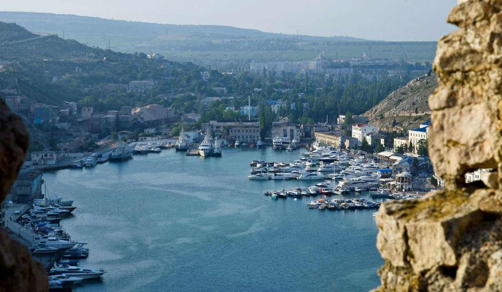

Бухта в Балаклаві
Кримське містечко Балаклава прикрашає стародавня бухта, здавна радує око подорожуючих, а також
захищає
від набігів ворогів. Балаклавська бухта — одна з бухт, розташованих в межах «Великого Севастополя».
Неподалік від бухти розташована старовинна фортеця Чембало.